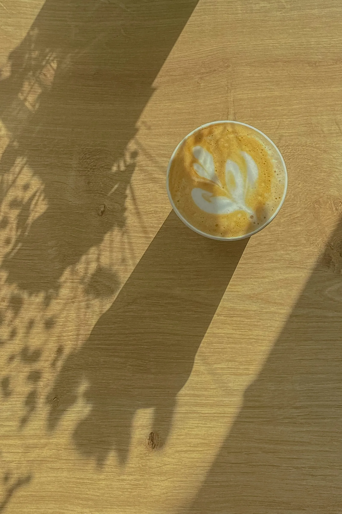
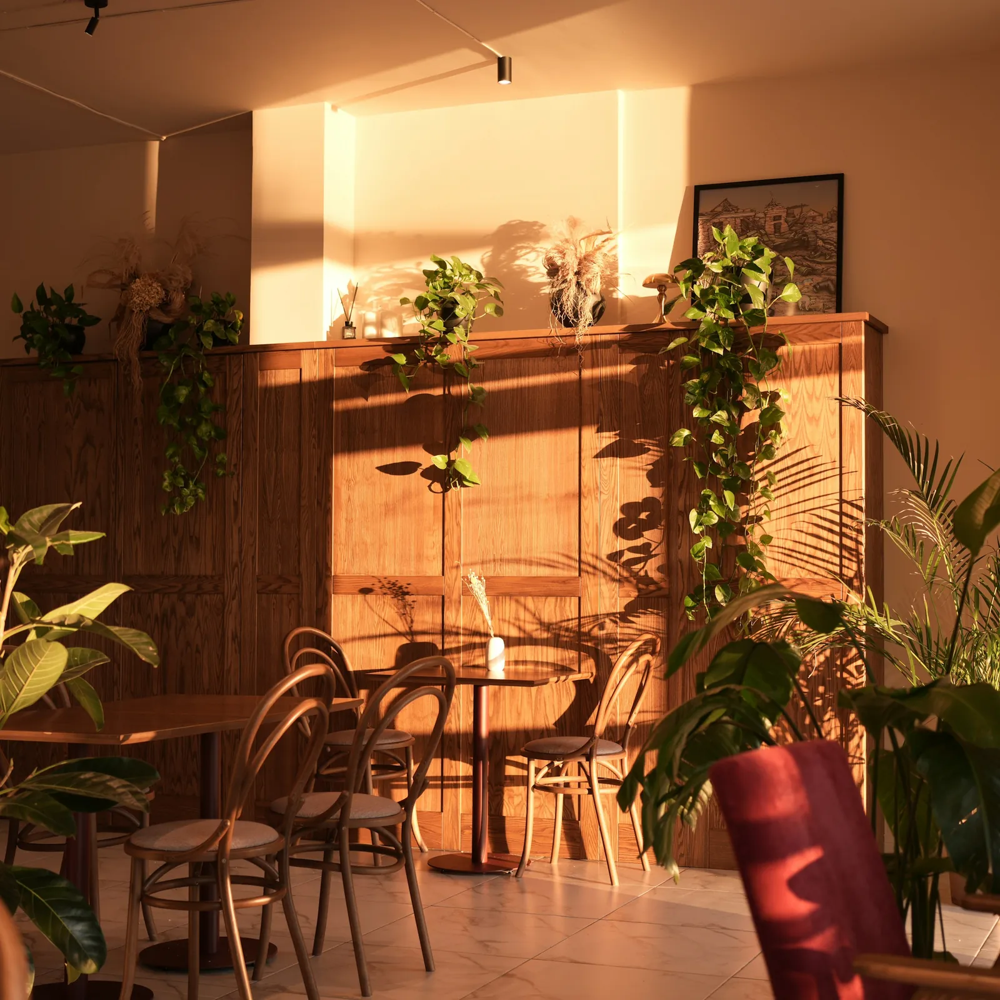
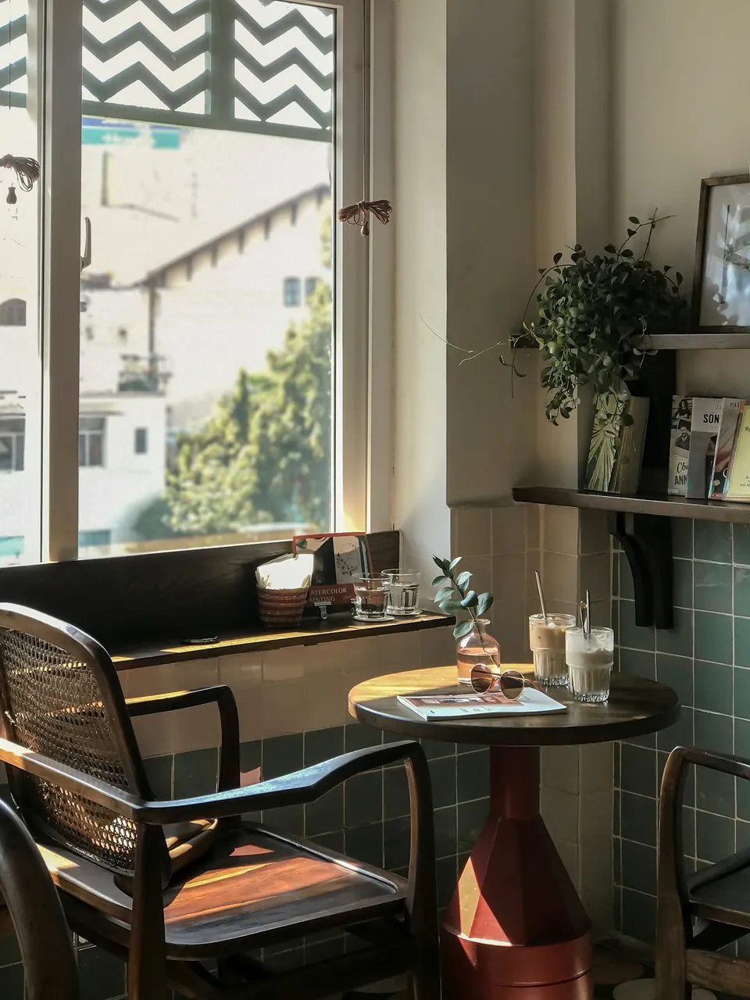
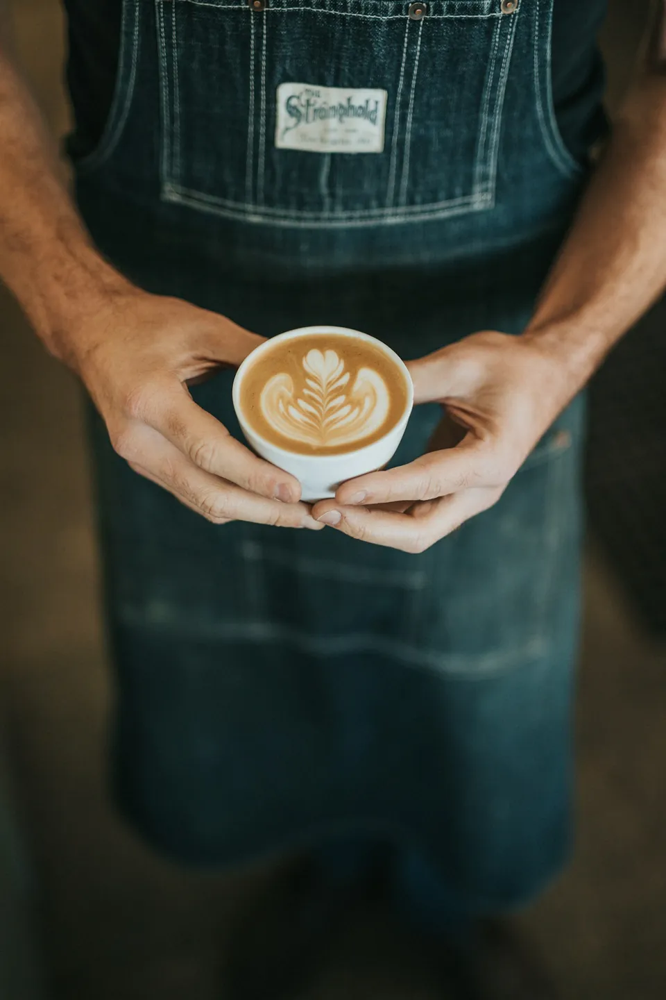
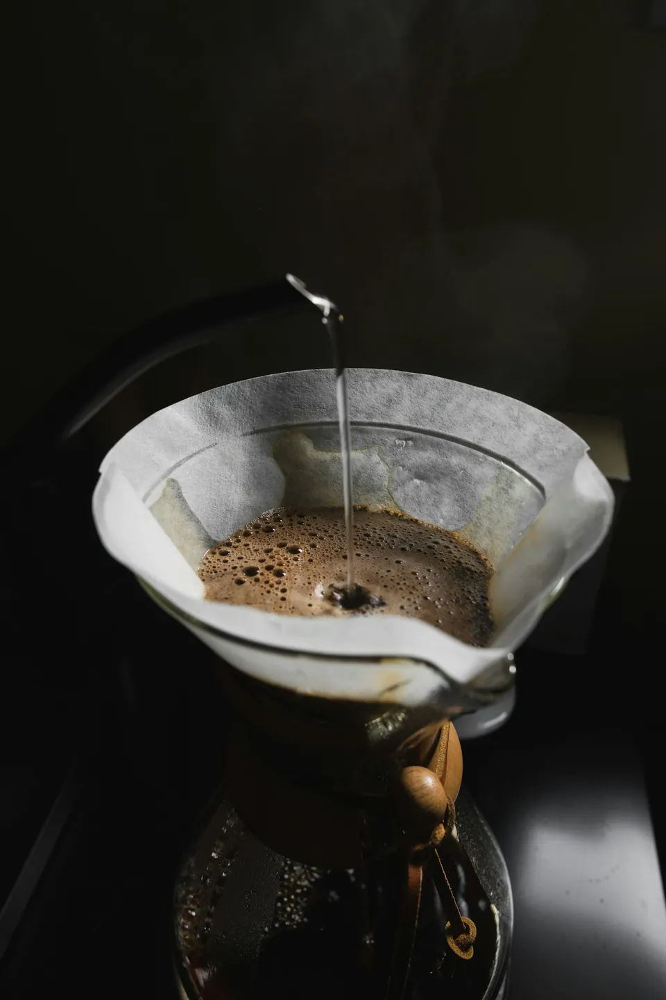
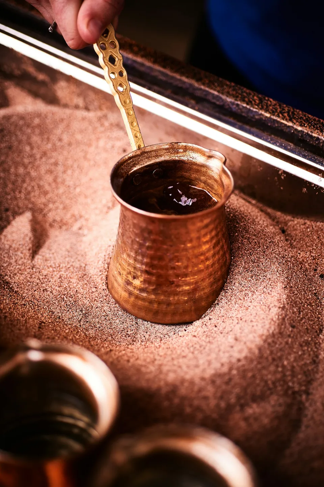
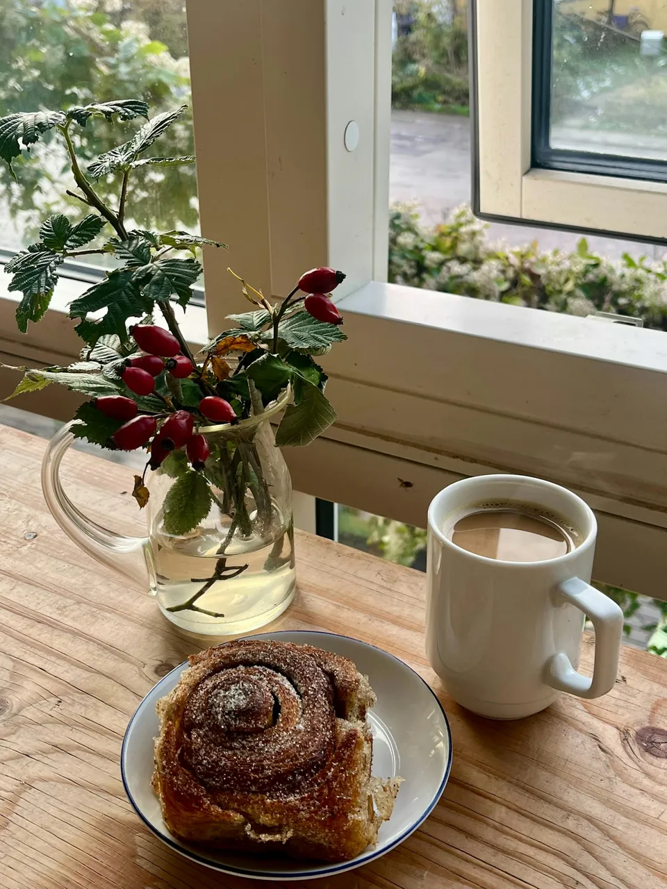

Espresso ve sütlüler
Ev harmanı
Brezilya Cerrado %60 · Etiyopya Sidamo %40
Bitter çikolata, fındık, kuru üzüm
Saatler
Yer ayırtYeldeğirmeni — Kadıköy
Yeldeğirmeni'nde iki büyük pencereli bir köşe. Sabah yedide ekşi maya, sekizde kruvasan, öğleden sonra yanık cheesecake. Arada iyi kahve.

Her tepsiyi çıkacağı saatten geriye sayarak hazırlarız. Aşağıdaki liste canlı: tepsi fırından çıkınca işaretlenir.
Günde 24 somun; tam buğday ve çavdarlı.
Üç gün dinlenen hamur, %82 yağlı tereyağı.
İkinci tepsi 13.00'te.
Ilık dilimler; bütün kek için bir gün önceden haber verin.

Pervaz, Yeldeğirmeni'nde eskiden matbaa olan bir köşede açıldı. Duvarları söktük, iki pencereyi büyüttük, dibine bir taş fırın koyduk. Sabahları güneş tezgâha vurur; bütün masalar bu yüzden pencereye bakar.
Mahalle fırını gibi çalışırız: erken açılır, erken kapanırız. Biten tepsinin yenisi aynı gün gelmez, ertesi sabah gelir.


Çekirdeklerimizi iki haftada bir, İstanbul'daki küçük bir kavurucudan taze alırız. Bu ay üç çekirdek var; tadım notları kavurucunun değil, bizim.
Espresso ve sütlüler
Brezilya Cerrado %60 · Etiyopya Sidamo %40
Bitter çikolata, fındık, kuru üzüm
V60
Yıkanmış · 2.100 m
Bergamot, şeftali, yasemin
Filtre ve cold brew
Honey · 1.800 m
Karamel, kırmızı elma, kakao


Cumartesi ve pazar 09.00–13.30 arası rezervasyon alıyoruz. Hafta içi sıra yok; gelin, oturun.

Kadıköy iskelesinden 7 dakika yürüyüş · Bisiklet park yeri kapının önünde · Köpekler bahçede ağırlanır.
Haritada aç| Pazartesi | 08.00–20.00 |
|---|---|
| Salı | 08.00–20.00 |
| Çarşamba | 08.00–20.00 |
| Perşembe | 08.00–20.00 |
| Cuma | 08.00–20.00 |
| Cumartesi | 09.00–20.00 |
| Pazar | 09.00–20.00 |
Kahvaltı her gün 14.00'e kadar. Fırın tepsileri bitince erken kapanabiliriz; Instagram'da yazarız.